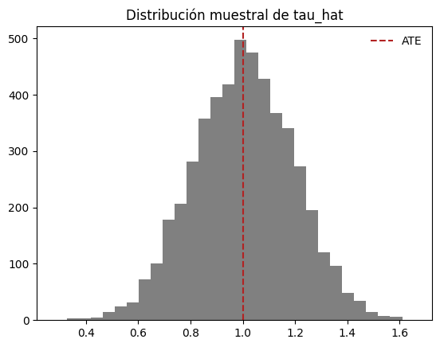

from scipy.special import comb
import os
import pandas as pd
from statsmodels.stats.weightstats import ttest_ind
import numpy as np
from scipy.stats import mannwhitneyu
from scipy.stats import ks_2samp
import matplotlib.pyplot as plt
from scipy.stats import expon
import os
if 'COLAB_GPU' in os.environ:
from google.colab import drive
drive.mount("/content/drive/")
path = "/content/drive/MyDrive/Estudios/ding/data"
df = pd.read_csv(os.path.join(path, "lalonde.csv"))
else:
df = pd.read_csv("data/lalonde.csv")Inferencia Neymaniana
Causal Inference
Inferencia Neymaniana en Experimentos Completamente Aleatorizados
Inferencia Neymaniana en Experimentos Completamente Aleatorizados## Cantidades de poblaciones finitas
Definición: Cantidades de poblaciones finitas de resultados potencialesConsideremos un experimento con \(n\) unidades, de las cuales a \(n_1\) unidades se les aplicará el tratamiento y a \(n_0\) se les aplicará el control, \(n=n_1+n_0\). De esta forma tenemos las siguientes cantidades de poblaciones finitas: - Medias de resultados potenciales\[\bar{Y}(1)=n^{-1}\sum_{i=1}^{n}Y_i(1);\space \space \space \bar{Y}(0)=n^{-1}\sum_{i=1}^{n}Y_i(0)\] - Varianzas de resultados potenciales\[S^{2}(1)=(n-1)^{-1}\sum_{i=1}^{n}\{Y_i(1)-\bar{Y}(1)\}^{2};\space \space \space S^{2}(0)=(n-1)^{-1}\sum_{i=1}^{n}\{Y_i(0)-\bar{Y}(0)\}^{2}\] - Covarianzas de resultados potenciales\[S(1,0)=(n-1)^{-1}\sum_{i=1}^{n}\{Y_i(1)-\bar{Y}(1)\}\{Y_i(0)-\bar{Y}(0)\}\] - Media de efectos causales\[\tau = n^{-1}\sum_{i=1}^{n}\tau_i = \bar{Y}(1)- \bar{Y}(0)\] - Varianza de efectos causales\[S^{2}(\tau)=(n-1)^{-1}\sum_{i=1}^{n}\{\tau_i-\tau\}^{2}\]
Teorema de Neyman
Definición: Cantidades muestrales basados en resultados observados - Medias muestrales de resultados observados\[\hat{Y}(1) = n_1^{-1}\sum_{i=1}^{n}Z_iY_i \space; \space\space\hat{Y}(0) = n_0^{-1}\sum_{i=1}^{n}(1-Z_i)Y_i\] - Varianzas muestrales de resultados observados\[\hat{S}^2(1)=(n_1-1)^{-1}\sum_{i=1}^{n}Z_i\{Y_i-\hat{Y}(1)\}\space; \space\space\hat{S}^2(0)=(n_0-1)^{-1}\sum_{i=1}^{n}(1-Z_i)\{Y_i-\hat{Y}(0)\}\] - No existencia de \(\hat{S}^2(0,1)\) y de \({S}^2(\tau)\)No existen estimadores de \(\hat{S}^2(0,1)\) y de \({S}^2(\tau)\) porque no es posible observar al mismo tiempo los resultados potenciales \(Y_i(1)\) y \(Y_i(0)\) de cada unidad \(i\).
Teorema de NeymanBajo un experimento completamente aleatorizado: 1. El estimador de diferencia de medias \(\hat\tau = \hat{Y}(1) - \hat{Y}(0)\) es insesgado para \(\tau\): \[E(\hat\tau) = \tau\]2. \(\hat\tau\) tiene varianza\[\begin{aligned} var(\hat{\tau}) &= \frac{S^2(1)}{n_1} + \frac{S^2(0)}{n_0} - \frac{S^2(\tau)}{n} \\ &= \frac{n_0}{n_1n}S^2(1) + \frac{n_1}{n_0n}S^2(0) + \frac{2}{n}S(0,1)\end{aligned}\]3. El estimador de la varianza\[\hat V = \frac{\hat{S}^2(1)}{n_1}+\frac{\hat{S}^2(0)}{n_0}\]es conservador en el sentido de que\[E(\hat V) - var(\hat \tau) = \frac{S^2(\tau)}{n} \geq 0\]Donde la igualdad solo se cumple si y solo si \(\tau_i = \tau\) para toda unidad \(i\).Consideraciones especiales - A pesar de que el estimador \(\hat\tau\) es de diferencia de medias, la varianza no depende únicamente de las varianzas finitas de los efectos potenciales, sino también de la varianza finita de los efectos individuales. - En la prueba de aleatorización de Fisher, el vector \(Y\) de resultados observados es el mismo para cualquier permutación, dada la hipótesis nula donde los resultados potenciales \(Y_i(0)\) y \(Y_i(1)\) son los mismos. Aquí en cambio, al no hacerse ese supuesto, \(Y\) varía con cada permutación.
Análisis de regresión de un experimento completamente aleatorizadoEs posible encontrar inferencia del efecto causal promedio \(\tau\) basada en regresión lineal. El enfoque estándar es el de Mínimos Cuadrados Ordinarios (OLS) de los resultados observados sobre los indicadores de tratamiento y un intercepto:\[Y_i = a + bZ_i\]\[(\hat \alpha, \hat \beta) = \underset{(a,b)}{\operatorname{argmin}}\sum_{i=1}^{n}(Y_i - a - bZ_i)\]En donde el estimador \(\hat \beta\) es usado como el estimador del efecto causal promedio. Con esta especificación, se puede demostrar, aunque no aquí, que \(\hat \beta\) es equivalente al estimador de diferencia de medias:\[\hat \beta = \hat \tau\]Sin embargo, el estimador de varianza de OLS es:\[\hat V_{OLS}= \frac{n(n_1-1)}{(n-2)n_1n_0}S^2(1) + \frac{n(n_0-1)}{(n-2)n_1n_0}S^2(0) \approx \frac{S^2(1)}{n_0} + \frac{S^2(0)}{n_1}\]difiere de \(\hat V\) inclusive con valores grandes de \(n_1\) y \(n_0\).Por tal motivo, podemos usar el estimador robusto de la varianza de Eicker-Huber-White (EHW) que sí es cercano a \(\hat V\).\[\hat V_{EHW}= \frac{\hat S^2(1)}{n_1}\frac{n_1-1}{n_1} + \frac{\hat S^2(0)}{n_0}\frac{n_0-1}{n_0} \approx \frac{S^2(1)}{n_1} + \frac{S^2(0)}{n_0}\]Inclusive la variante HC2 es idéntica a \(\hat V\).
Ejemplos
# Simulación
# Tamaño de población, tratamiento y control
n = 100
n1 = 60
n0 = n - n1
# Resultados potenciales
idx = np.arange(n)
y0 = expon.rvs(size=n, random_state=42)
y0 = np.sort(y0)[::-1]
y1 = y0 + 1
# Efecto causal promedio teórico (igual a 1 por la construcción de y1)
tau = np.mean(y1 - y0)
print("Efecto causal promedio:", tau)
# Generamos experimentos completamente aleatorizados
tau_hats = []
vars_tau = []
for i in range(5000):
# Escogemos las unidades de tratamiento y control
perm = np.random.permutation(idx)
idx_treat = perm[:n1]
idx_control = perm[n1:]
treat = y1[idx_treat]
control = y0[idx_control]
# Estimador insesgado del efecto causal promedio
tau_hat = np.mean(treat) - np.mean(control)
tau_hats.append(tau_hat)
#
fig, ax = plt.subplots()
ax.hist(tau_hats, bins = 30, color = 'grey')
ax.set_title("Distribución muestral de tau_hat")
ax.axvline(x=tau, linestyle='--', color='firebrick', label='ATE')
ax.legend(frameon=False)Efecto causal promedio: 1.0
# Lalonde data
z = df["treat"]
y = df["re78"]
# Estimador del efecto causal promedio
tau_hat = np.mean(y[z==1]) - np.mean(y[z==0])
print("Estimador insesgado de efecto causal promedio (ATE):", np.round(tau_hat, 3))
# Varianza del estimador
n1 = np.sum(z)
n0 = z.shape[0] - n1
v_hat = np.var(y[z==1], ddof=1)/n1 + np.var(y[z==0], ddof=1)/n0
se_hat = np.sqrt(v_hat)
print("Error estándar del estimador de ATE:", np.round(se_hat, 3))
# estimador de OLS
from statsmodels.regression.linear_model import OLS
import statsmodels.api as sm
Z = sm.add_constant(z)
model = sm.OLS(y,Z)
results = model.fit()
print("-"*50)
print("Estimador de OLS")
print("Coeficiente:", np.round(results.params.values[1], 3))
print("Error éstandar:", np.round(results.bse.values[1], 3))
print("Error éstandar EHW(0):", np.round(results.HC0_se.values[1], 4))
print("Error éstandar EHW(2):", np.round(results.HC2_se.values[1], 4))Estimador insesgado de efecto causal promedio (ATE): 1794.343
Error estándar del estimador de ATE: 670.997
--------------------------------------------------
Estimador de OLS
Coeficiente: 1794.343
Error éstandar: 632.854
Error éstandar EHW(0): 669.3155
Error éstandar EHW(2): 670.9967